Medical Cocorose
피부모공 전문센터
Pore & Skin Texture Specialist Center
모공, 블랙헤드, 여드름 흉터, 피부결 개선을 위한 전문 치료 시스템
결과 중심 한국 피부과 시스템
기미, 색소, 리프팅, 피부재생 전문센터 운영
PORE CENTERMedical Cocorose
피부 건강과 아름다움까지 메디컬 코코로즈의 진료센터
메디컬 코코로즈는 정직한 진료와 정확한 피부 분석을 바탕으로 개개인의 피부 상태에 맞는 치료 방향을 제안합니다.
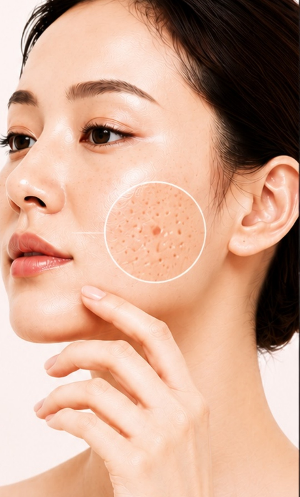
PORE CENTER
모공은 단순히 크기만의 문제가 아닙니다. 피지 분비, 피부 탄력 감소, 여드름 흉터, 피부 노화 등 다양한 원인에 의해 모공이 넓어질 수 있습니다. 메디컬 코코로즈는 피부 상태를 분석하여 모공의 원인에 맞는 맞춤형 치료를 제공합니다.
View More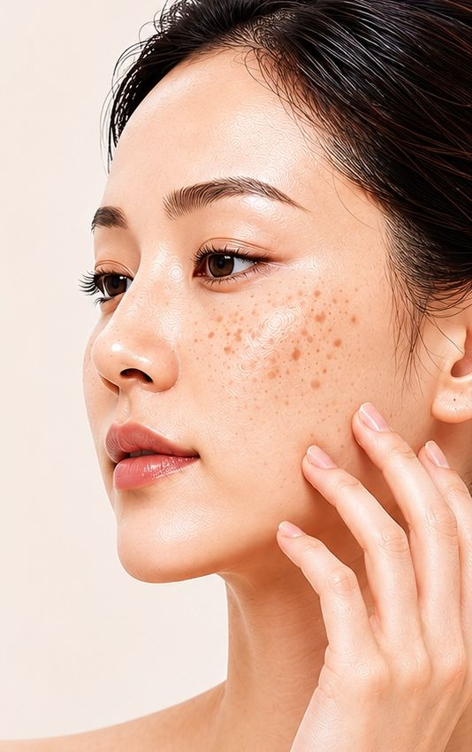
PIGMENTATION CENTER
색소 질환은 피부 표면만의 문제가 아니라 자외선, 호르몬 변화, 염증, 피부 노화 등 다양한 원인에 의해 발생합니다. 정확한 피부 분석과 체계적인 치료가 중요합니다.
View More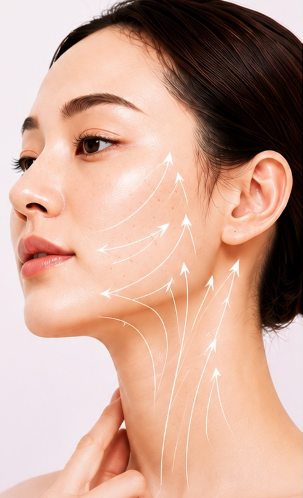
LIFTING CENTER
피부 탄력 감소와 처짐은 자연스러운 노화 과정의 일부입니다. 메디컬 코코로즈는 자연스럽고 건강한 아름다움을 목표로 맞춤형 리프팅 프로그램을 제공합니다.
View MoreUnderstand Your Skin,
Empower Your Life
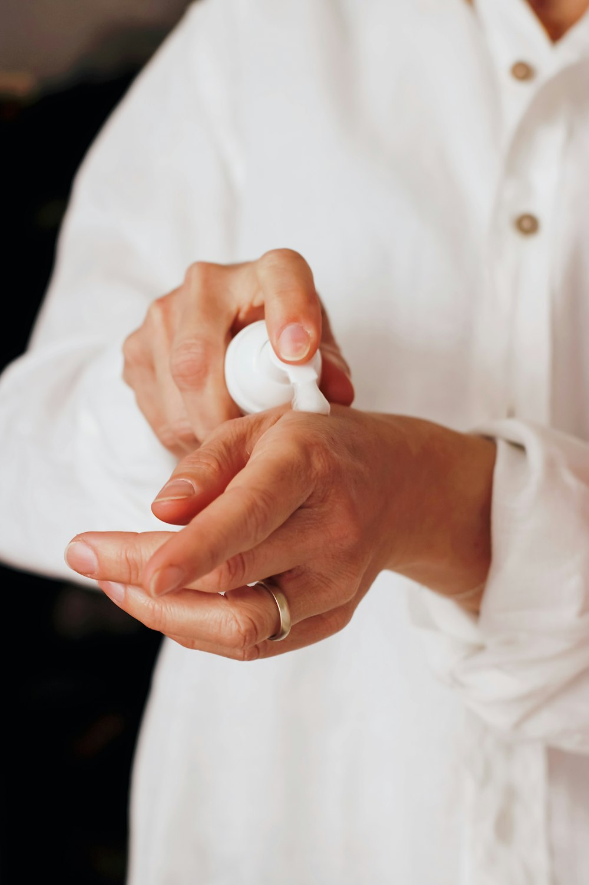
정직한 진료
피부 상태를 정확히 분석해 꼭 필요한 치료만 권합니다. 과도한 시술보다 가장 적합한 계획을 제안합니다.
결과 중심의 치료
시술의 양보다 환자가 실제로 느끼는 변화가 중요합니다. 지속적인 관리로 장기적인 개선을 만들어갑니다.
맞춤형 솔루션
같은 고민이라도 원인과 방법은 다를 수 있습니다. 피부 상태와 생활 습관, 목표까지 고려해 맞춤 계획을 세웁니다.
함께 성장하는 병원
단기적인 시술보다 장기적인 신뢰를 중요하게 생각합니다. 환자·직원·지역사회와 함께 성장하는 병원을 지향합니다.
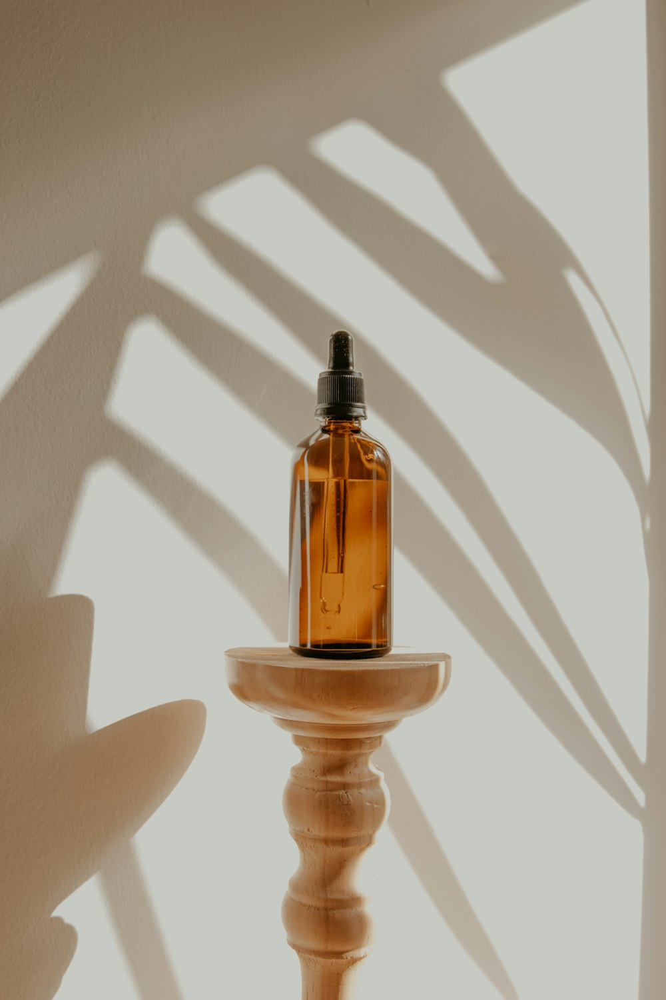
우리의 비전
세부에서 가장 신뢰받는 피부 전문센터를 목표로 합니다. 정직한 진료와 결과 중심의 치료로 신뢰받는 병원이 되겠습니다.
정직한 진료
피부 상태를 정확히 분석해 꼭 필요한 치료만 권합니다. 과도한 시술보다 가장 적합한 계획을 제안합니다.
결과 중심의 치료
시술의 양보다 환자가 실제로 느끼는 변화가 중요합니다. 지속적인 관리로 장기적인 개선을 만들어갑니다.
맞춤형 솔루션
같은 고민이라도 원인과 방법은 다를 수 있습니다. 피부 상태와 생활 습관, 목표까지 고려해 맞춤 계획을 세웁니다.
함께 성장하는 병원
단기적인 시술보다 장기적인 신뢰를 중요하게 생각합니다. 환자·직원·지역사회와 함께 성장하는 병원을 지향합니다.
우리의 비전
세부에서 가장 신뢰받는 피부 전문센터를 목표로 합니다. 정직한 진료와 결과 중심의 치료로 신뢰받는 병원이 되겠습니다.
정직한 진료
피부 상태를 정확히 분석해 꼭 필요한 치료만 권합니다. 과도한 시술보다 가장 적합한 계획을 제안합니다.
결과 중심의 치료
시술의 양보다 환자가 실제로 느끼는 변화가 중요합니다. 지속적인 관리로 장기적인 개선을 만들어갑니다.
맞춤형 솔루션
같은 고민이라도 원인과 방법은 다를 수 있습니다. 피부 상태와 생활 습관, 목표까지 고려해 맞춤 계획을 세웁니다.
함께 성장하는 병원
단기적인 시술보다 장기적인 신뢰를 중요하게 생각합니다. 환자·직원·지역사회와 함께 성장하는 병원을 지향합니다.
우리의 비전
세부에서 가장 신뢰받는 피부 전문센터를 목표로 합니다. 정직한 진료와 결과 중심의 치료로 신뢰받는 병원이 되겠습니다.
SIGNATURE
대표 시술
BTP Regeneration Injection
(Bright · Tightening · Pore)- 피부 재생
- 모공 개선
- 피부결 개선
K-Laser
- 모공 축소
- 여드름 흉터 개선
- 피부결 개선
Medical Cocorose Location
피부를 위한 프라이빗 케어 공간
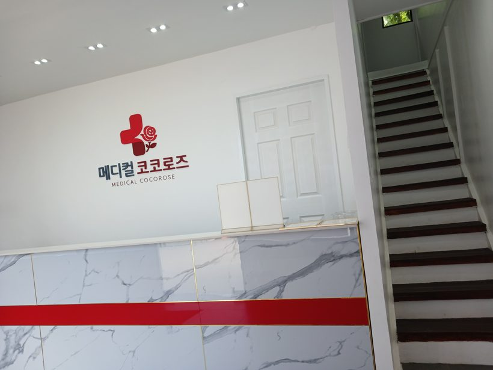
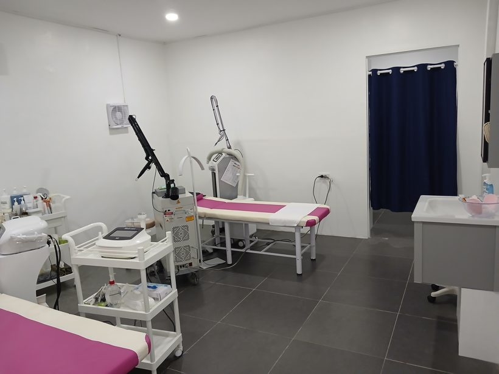
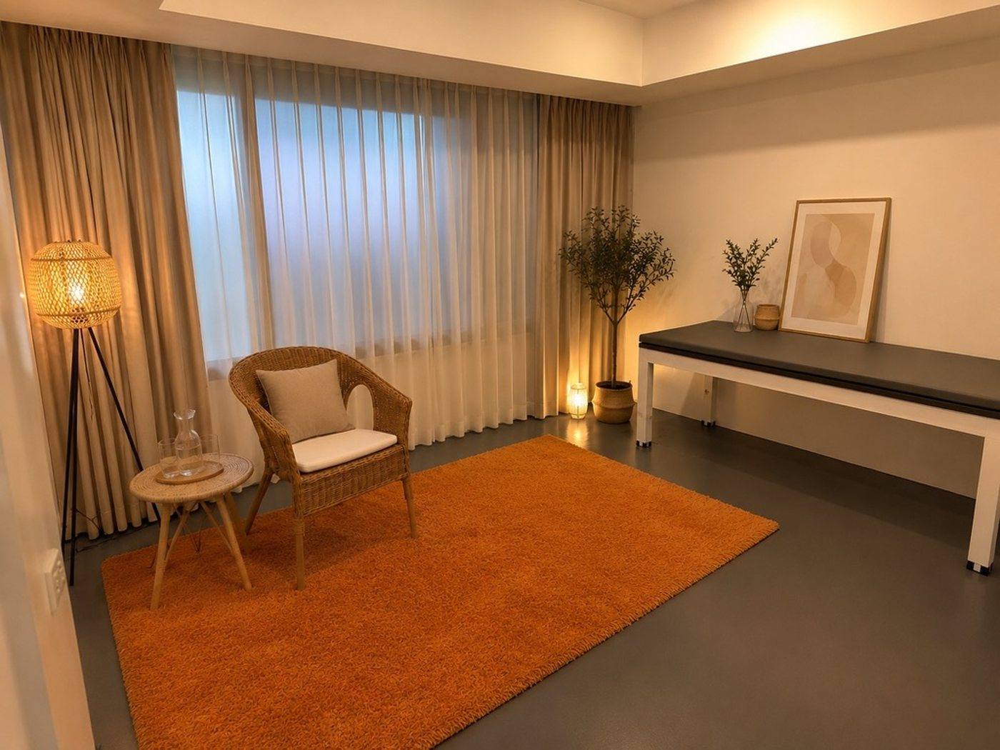
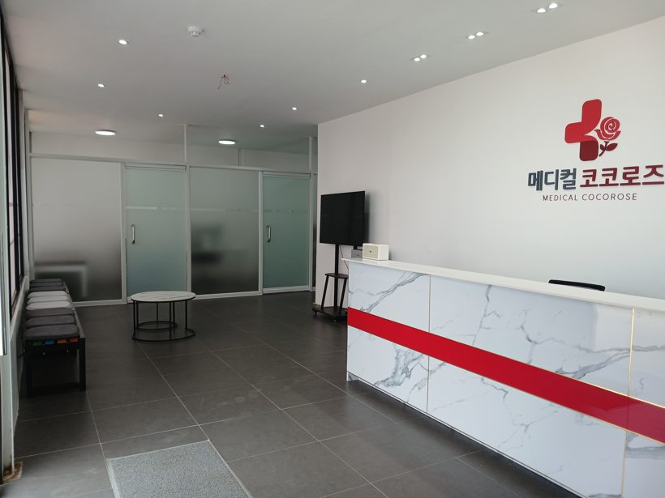
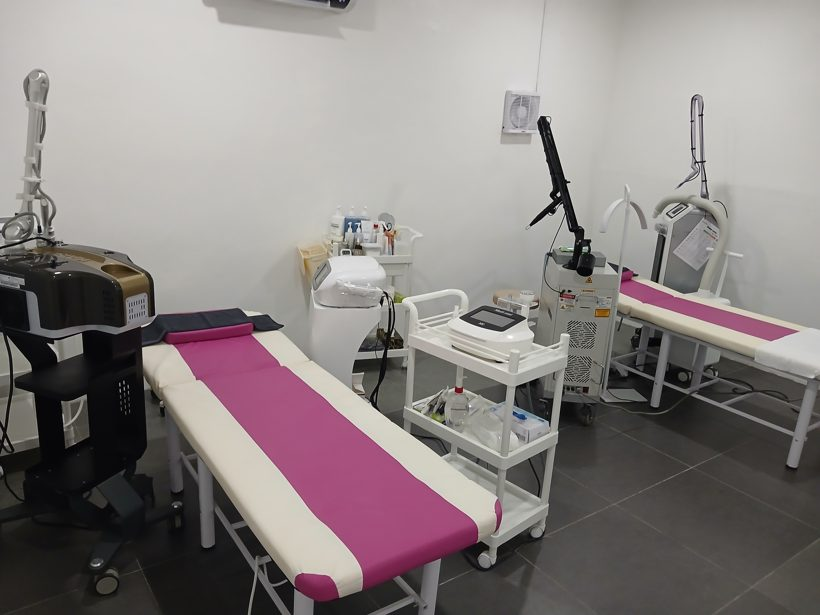
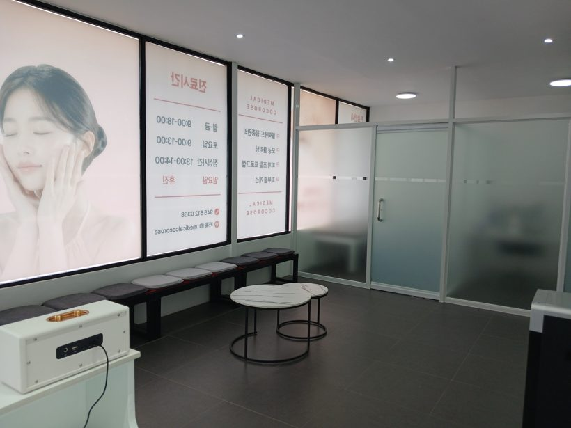
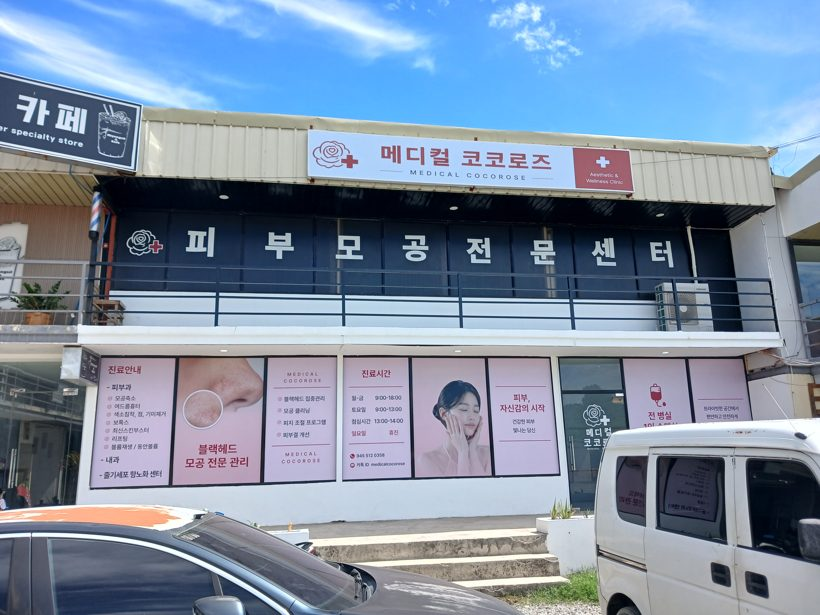